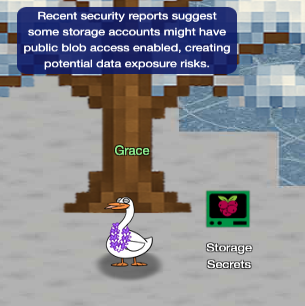

Blob Storage Challenge

The Neighborhood HOA might be good at monitoring lawn height, but their cloud security is leaking like a sieve. We are diving into the Azure CLI to plug a massive data leak before the wrong people find it.
Challenge Overview
We have been dropped into the neighborhood tenant to audit the HOA's cloud infrastructure. The objective is to identify which Azure Storage account has been misconfigured to allow public access and retrieve the exposed data using the Azure CLI.
Step 1: Azure CLI Help
🎄 Welcome! 🎄
In a moment, you will be connected to an Azure CLI session in the "neighborhood" tenant.
Your mission: 🔍 Investigate and find WHERE a security vulnerability exists.
Good luck! I'm sure you will do great. Connecting you now...
You may not know this but the Azure cli help messages are very easy to access. First, try typing:
$ az help | less
Use the Azure CLI help command to explore available commands and get familiar with the interface.
neighbor@73dabd0a25a0:~$ az help | less
Group
az
Subgroups:
account : Manage Azure subscription information.
acr : Manage private registries with Azure Container Registries.
...
Step 2: Initial Reconnaissance
Next, you've already been configured with credentials. 🔑
$ az account show | less
- Pipe the output to | less so you can scroll.
- Press 'q' to exit less.
Upon connecting to the terminal, the first step is establishing who we are and where we are working.
We run az account show to view the subscription details.
The output confirms we are operating in the theneighborhood-sub subscription. Now that
we have our
bearings, we can start hunting for storage resources.
neighbor@73dabd0a25a0:~$ az account show | less { "environmentName": "AzureCloud", "id": "2b0942f3-9bca-484b-a508-abdae2db5e64", "isDefault": true, "name": "theneighborhood-sub", "state": "Enabled", "tenantId": "90a38eda-4006-4dd5-924c-6ca55cacc14d", "user": { "name": "theneighborhood@theneighborhood.invalid", "type": "user" } }
Step 3: Enumerating Storage Accounts
Now that you've run a few commands, Let's take a look at some Azure storage accounts.
Try: az storage account list | less
For more information:
https://learn.microsoft.com/en-us/cli/azure/storage/account?view=azure-cli-latest
We need to see what storage accounts exist in this subscription. We run the list command to dump the configuration of all accounts.
The output returns a JSON list of multiple accounts. While scanning the output, neighborhood2 stands out immediately.
Warning: neighborhood2 has a "Trifecta of Insecurity," failing at the Network, Transport, and Storage layers:
-
Network Layer:
"allowBlobPublicAccess": true
This is the critical vulnerability that allows anonymous internet access to the data. -
Storage Layer:
"encryption": { "services": { "blob": { "enabled": false } } }
This reveals a Data at Rest exposure. The data is stored on the physical disks in plaintext without encryption, meaning physical theft of the drive or a bypass of the storage service layer would yield readable data immediately. -
Transport Layer:
"minimumTlsVersion": "TLS1_0"
This indicates an outdated security protocol is permitted for data in transit.Side Note: Why TLS 1.0 is a security risk
TLS 1.0, released in 1999, is functionally deprecated and considered insecure by modern standards (such as PCI-DSS and NIST). Allowing it exposes the connection to:
- Weak Cipher Suites: It supports older cryptographic algorithms (like RC4 or CBC mode ciphers) that are susceptible to attacks.
- Known Vulnerabilities: It is vulnerable to specific attacks like BEAST and POODLE (in certain implementations) which can allow attackers to decrypt parts of the traffic.
- Lack of Modern Features: It lacks support for modern authenticated encryption (AEAD) ciphers like AES-GCM, making Man-in-the-Middle (MitM) attacks significantly easier to execute compared to TLS 1.2 or 1.3.
neighbor@73dabd0a25a0:~$ az storage account list | less ... "name": "neighborhood2", "properties": { "allowBlobPublicAccess": true, "encryption": { "keySource": "Microsoft.Storage", "services": { "blob": { "enabled": false } } }, "minimumTlsVersion": "TLS1_0"
Step 4: Investigating the Target
hmm... one of these looks suspicious 🚨, i think there may be a misconfiguration here somewhere.
Try showing the account that has a common misconfiguration: az storage account show --name xxxxxxxxxx | less
To confirm our suspicions, we isolate this specific account to view its full details. The configuration confirms that public access is indeed allowed. This means any container inside this account set to 'Container' or 'Blob' public access will expose its files to the internet.
neighbor@73dabd0a25a0:~$ az storage account show --name neighborhood2 | less
{
"id": "/subscriptions/2b0942f3-9bca-484b-a508-abdae2db5e64/resourceGroups/theneighborhood-rg1/providers/Microsoft.Storage/storageAccounts/neighborhood2",
"name": "neighborhood2",
"location": "eastus2",
"kind": "StorageV2",
"sku": {
"name": "Standard_GRS"
},
"properties": {
"accessTier": "Cool",
"allowBlobPublicAccess": true,
"minimumTlsVersion": "TLS1_0",
"encryption": {
"services": {
"blob": {
"enabled": false
...
Step 5: Listing Containers
Now we need to list containers in neighborhood2. After running the command what's interesting in the list?
For more information:
https://learn.microsoft.com/en-us/cli/azure/storage/container?view=azure-cli-latest#az-storage-container-list
Checking the containers, we find two: public and private. The public container has a property of "publicAccess": "Blob", which means that all blobs within this container are publicly accessible. This is the misconfiguration we were looking for.
neighbor@73dabd0a25a0:~$ az storage container list --account-name neighborhood2 [ { "name": "public", "properties": { "lastModified": "2024-01-15T09:00:00Z", "publicAccess": "Blob" } }, { "name": "private", "properties": { "lastModified": "2024-02-05T11:12:00Z", "publicAccess": null } } ]
Step 6: Locating Sensitive Files
Let's take a look at the blob list in the public container for neighborhood2.
For more information:
https://learn.microsoft.com/en-us/cli/azure/storage/blob?view=azure-cli-latest#az-storage-blob-list
We see three files in the public container: refrigerator_inventory.pdf, admin_credentials.txt, and network_config.json. The file named admin_credentials.txt stands out as it likely contains sensitive information. We will attempt to download this file next.
neighbor@73dabd0a25a0:~$ az storage blob list --account-name neighborhood2 --container-name public
[
{
"name": "refrigerator_inventory.pdf",
"properties": {
"contentLength": 45678,
"contentType": "application/pdf",
"metadata": {
"created_by": "NeighborhoodWatch",
"document_type": "inventory",
"last_updated": "2024-12-15"
}
}
},
{
"name": "admin_credentials.txt",
"properties": {
"contentLength": 1024,
"contentType": "text/plain",
"metadata": {
"note": "admins only"
}
}
},
{
"name": "network_config.json",
"properties": {
"contentLength": 2048,
"contentType": "application/json",
"metadata": {
"encrypted": "false",
"environment": "prod"
}
}
}
]
Step 7: Exfiltrating the File
Try downloading and viewing the blob file named admin_credentials.txt from the public container.
💡 hint: --file /dev/stdout should print in the terminal. Dont forget to use | less!
To complete the challenge, we download the content of the credentials file. We use /dev/stdout to print the file content directly to the terminal rather than saving it to disk. The file contains a list of credentials for various services in the neighborhood, including many admin accounts. Each entry includes a username and password.
neighbor@73dabd0a25a0:~$ az storage blob download --account-name neighborhood2 --container-name public --name 'admin_credentials.txt' --file /dev/stdout | less
# You have discovered an Azure Storage account with "allowBlobPublicAccess": true.
# This misconfiguration allows ANYONE on the internet to view and download files
# from the blob container without authentication.
# Public blob access is highly insecure when sensitive data (like admin credentials)
# is stored in these containers. Always disable public access unless absolutely required.
Azure Portal Credentials
User: azureadmin
Pass: AzUR3!P@ssw0rd#2025
Windows Server Credentials
User: administrator
Pass: W1nD0ws$Srv!@42
...
Side Note: network_config.json and refrigerator_inventory.pdf
Two other files were available to be viewed: refrigerator_inventory.pdf and network_config.json.
The network_config.json exposes the entire internal topology. It contained a 3-tier architecture
(Frontend, Backend, Database) and a major discrepancy: the config claims
encryptionInTransit is
enforced, directly contradicting our discovery of TLS 1.0 on the storage account. This is a common
issue in real-world environments where documentation and actual configuration can be out of sync.
The refrigerator_inventory.pdf was actually a plain text file containing an inventory of refrigerators in the neighborhood including refrigerator models and volumes and the names of the owners and their street addresses.
Challenge Reference Material
Challenge Descriptions
Classic Mode Description
Help the Goose Grace near the pond find which Azure Storage account has been misconfigured to allow public blob access by analyzing the export file.
CTF Mode Description
The Neighborhood HOA uses Azure storage accounts for various IT operations. You've been asked to audit their storage security configuration to ensure no sensitive data is publicly accessible. Recent security reports suggest some storage accounts might have public blob access enabled, creating potential data exposure risks.
Official Hints
- This terminal has built-in hints!